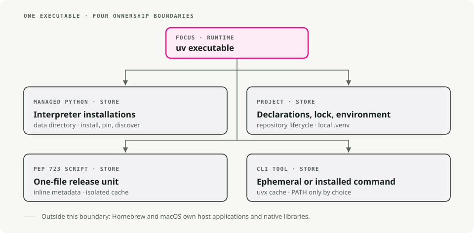
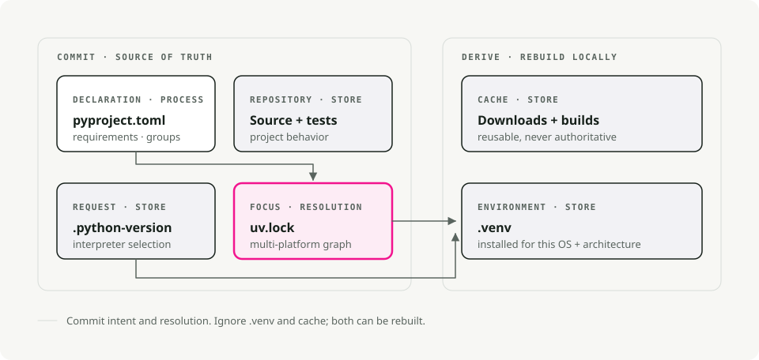
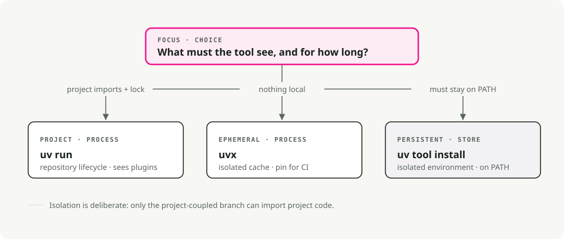
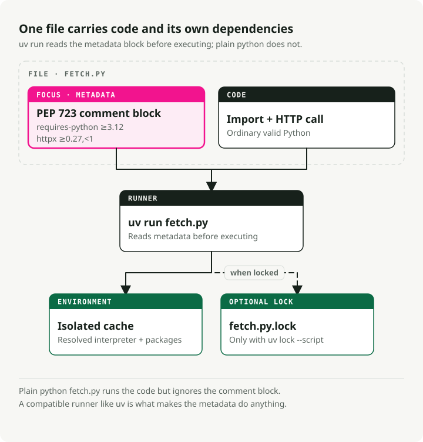

uv on macOS: Managing Python Versions, Projects, and Tools
Quick Start
# Install uv
brew install uv
# For new projects (modern workflow)
uv init # create project structure
uv add pandas numpy # add dependencies
uv run train.py # run your script
# For existing projects (legacy workflow)
uv venv # create virtual environment
uv pip install -r requirements.txt # install dependencies
uv run train.py # run your script
# Run tools without installing them
uvx ruff check . # run linter
uvx black . # run formatter
# Run a single-file script with its own dependencies (no project needed)
uv run fetch.py # uv reads the inline deps and runs it
TL;DR: Use uv as the default Python project and tool manager on macOS. Keep Homebrew for system packages, install Python versions through uv python, pin dependencies in pyproject.toml, and use uvx for one-off CLI tools.
Why use uv for Python on macOS?
If you've used Python for a while, you probably juggle pip, virtualenv, pip-tools, pyenv, and poetry depending on the project. uv does what all of those do, with one binary.
It's written in Rust, and on my machine it installs packages roughly 10-100x faster than the old stack. The bigger win for me is that I stopped switching between tools mid-task.

It replaces pip and pip-tools for package management, pyenv for installing Python versions, virtualenv/venv for environments, pipx for running tools, and poetry or pdm for project workflows.
Installing uv
The easiest way to install uv on macOS is via Homebrew:
brew install uv
uv detects your Mac's architecture (Apple Silicon or Intel) automatically, so there's no extra configuration.
To keep it updated:
brew upgrade uv
# OR
uv self update
Core concepts
uv covers three use cases:
- Projects — building an application or library with dependencies.
- Scripts — running a single-file Python script with inline dependencies.
- Tools — running command-line utilities (like
rufforhttpie) globally.
1. Project management
For new projects, uv uses the standard pyproject.toml for configuration and a cross-platform uv.lock for reproducible builds.

Start a new project:
uv init my-project
cd my-project
This creates a pyproject.toml, a .gitignore, and a hello.py.
Add dependencies:
# Runtime dependencies
uv add pandas requests
# Development dependencies
uv add pytest ruff --dev
Run your code:
uv run hello.py
uv manages the virtual environment in .venv for you. You don't need to activate it manually.
2. Managing Python versions
uv installs and manages Python versions for you, kept in ~/.cache/uv. If you've been using pyenv for this, you can drop it.
Install a specific version:
uv python install 3.12
Pin a version for your project:
uv python pin 3.11
This writes a .python-version file. On the next uv run, it uses the pinned version and downloads it if needed. Your team and CI end up on the same Python version without any extra coordination.
3. Running tools with uvx and uv tool install
uvx (an alias for uv tool run) runs Python command-line tools without adding them to your global environment or project dependencies.
# Run a linter
uvx ruff check .
# Run a formatter
uvx black .
# Start a temporary Jupyter server
uvx --from jupyterlab jupyter lab
Each tool runs in its own temporary environment, so there's no version conflict with whatever your project already has installed.

Two details I reach for constantly:
- Pin the version inline with
@:uvx ruff@0.6.0 check ., or force the newest withuvx ruff@latest. - The command name doesn't match the package? Use
--from. The packagejupyterlabships thejupytercommand, so it'suvx --from jupyterlab jupyter lab. Same for--from httpie http. - Need an extra dependency for a plugin? Add it with
--with:uvx --with mkdocs-material mkdocs serve.
If you use a tool every day, install it once instead of spinning up a fresh environment each time:
uv tool install ruff # now `ruff` is on your PATH
uv tool list # see what's installed
uv tool upgrade --all # update everything
uv tool uninstall ruff
The rule of thumb: uvx for one-off or CI runs, uv tool install for your daily drivers.
Legacy projects (requirements.txt)
requirements.txt has had a good run. It's a flat list of packages with no lockfile, no separation between app and dev dependencies, and no record of why anything is pinned. That's fine until the day you try to reproduce a build from eight months ago and discover that "pinned" meant whatever PyPI happened to resolve at the time.
If you own the project, migrate it. uv reads your existing list straight into a pyproject.toml:
uv init --bare # minimal pyproject.toml, no scaffolding
uv add -r requirements.txt # import runtime dependencies
uv add --dev -r requirements-dev.txt # and dev ones, if you split them
You now have a pyproject.toml and a real uv.lock that pins exact resolved versions. Confirm everything came across with uv pip freeze, delete the old requirements.txt, and don't look back.
But maybe you've been running the same requirements.txt since Python 3.6 and you're not interested in my opinion about it. Fair. uv still works as a drop-in replacement for pip and venv, no migration required:
# Create a virtual environment
uv venv
# Install dependencies
uv pip install -r requirements.txt
# Run it
uv run python app.py
Same commands you already know, just faster. Nothing about the old workflow gets worse; it's only that you no longer have to use it.
Single-file scripts with inline dependencies
This is the feature that changed how I write throwaway and glue code. A Python script can declare its own dependencies inside the file, in a comment block defined by PEP 723. No pyproject.toml, no requirements.txt, no virtual environment to create — uv run reads the block, builds a cached environment, and runs the file.
Worth being clear about what's doing the work here: this isn't a Python language feature, and it isn't a uv invention. The block is just a comment, so plain python fetch.py ignores it and fails on the missing imports. PEP 723 is a shared standard, so any compatible runner reads the same block — pipx run, Hatch, and PDM all support it too. uv happens to be the fastest way to use it, which is why the rest of this section uses uv run.

Here's the whole thing in one file, fetch.py:
# /// script
# requires-python = ">=3.12"
# dependencies = [
# "httpx",
# "rich",
# ]
# ///
import httpx
from rich import print
print(httpx.get("https://api.github.com/repos/astral-sh/uv").json())
Run it:
uv run fetch.py
The first run resolves and installs httpx and rich into a cached environment; later runs reuse it and start instantly.
You don't have to write the metadata block by hand. uv will scaffold and edit it for you:
# Create a new script with the block pre-filled
uv init --script fetch.py --python 3.12
# Add or remove dependencies
uv add --script fetch.py httpx rich
uv remove --script fetch.py rich
For a quick experiment you can even skip the block entirely and pass dependencies on the command line:
uv run --with httpx --with rich fetch.py
Why this is great for skill and automation scripts
I lean on this for the small scripts that don't deserve a project: a one-off data fix, a CI helper, a Claude Code skill script, a cron job. The script is the unit. You can drop it in a gist, commit it to any repo, or hand it to a teammate, and uv run is the only thing they need to run it correctly.
Make it directly executable with a shebang:
#!/usr/bin/env -S uv run --script
# /// script
# dependencies = ["httpx"]
# ///
import httpx
...
chmod +x fetch.py
./fetch.py # uv handles the environment behind the scenes
The -S splits the shebang into separate arguments so env passes --script through to uv.
Locking and pinning scripts
For scripts that need to keep working months from now, you have two options.
Lock the exact resolution next to the script:
uv lock --script fetch.py # writes fetch.py.lock
Or pin a point in time so uv only considers packages released before a given date — handy for reproducibility without a lockfile:
# /// script
# dependencies = ["httpx"]
# [tool.uv]
# exclude-newer = "2025-04-17T00:00:00Z"
# ///
Tips and tricks worth knowing
A few more things I use regularly that aren't obvious from the quick start.
Sync from the lockfile in CI. uv sync installs exactly what's in uv.lock. Add --frozen to fail loudly if the lockfile is stale instead of silently re-resolving — exactly what you want in CI and Docker builds.
uv sync --frozen
Group your dev dependencies. Beyond --dev, you can define named dependency groups in pyproject.toml (docs, lint, test) and sync only what you need:
uv add --group docs mkdocs-material
uv sync --only-group docs
Inspect the dependency tree. uv tree shows what pulled in what — and --outdated flags upgrades:
uv tree
uv tree --outdated
Export to requirements.txt when a downstream tool still expects one:
uv export --format requirements-txt > requirements.txt
Run a one-off Python with extra packages, no project required:
uv run --with pandas --with matplotlib python
Manage the cache when disk space gets tight or a build goes sideways:
uv cache clean # wipe the whole cache
uv cache prune # remove only unused entries
Why it's fast
Three things matter here. It's written in Rust, so there's no Python startup overhead on each invocation. It caches built wheels globally — once numpy is installed in one project, installing it in another is basically instant (on macOS it uses copy-on-write links). And it downloads and installs packages in parallel instead of one at a time.
Summary
| Task | Old way | The uv way |
|---|---|---|
| Install Python | pyenv install 3.12 |
uv python install 3.12 |
| New project | mkdir proj && cd proj && python -m venv .venv |
uv init proj |
| Install package | pip install pandas && pip freeze > requirements.txt |
uv add pandas |
| Run script | source .venv/bin/activate && python script.py |
uv run script.py |
| Script + deps | a project, or a manual venv just for one file | inline PEP 723 block + uv run |
| Run tool once | pipx run black |
uvx black |
| Install a tool | pipx install ruff |
uv tool install ruff |
| Reproducible CI | pip install -r requirements.txt |
uv sync --frozen |
I switched my Python workflow to uv shortly after it came out and haven't gone back. If you're still on the old stack, give it a try on your next project — that's how I tested it before moving everything over.
Key Takeaways
- Use
uvfor Python versions, virtual environments, project dependencies, and one-off tools instead of mixing several package managers. - Keep Homebrew responsible for system packages, not Python project isolation.
- Commit
pyproject.tomlanduv.lockso project setup is reproducible on a new machine. - Prefer
uvxfor occasional CLIs when you do not want to pollute a global environment.
References
- uv documentation - package, project, and Python version management.
- Python Packaging User Guide - current packaging standards and terminology.
- Homebrew documentation - macOS system package management.